Research
We study earthquake physics, seismic hazards, and tsunami processes by combining seismic observations, source imaging, numerical modeling, and data-driven approaches — investigating how ruptures nucleate, propagate, and interact with complex fault systems, and turning that understanding into better hazard assessment, monitoring, and early warning. A central thread of our methodological work is seismic array processing — back-projection — for earthquake source imaging. We increasingly incorporate artificial intelligence, large-scale seismic data analytics, distributed acoustic sensing (DAS), and adjoint-state inversion.
Research topics
- Rupture dynamics & supershear earthquakes
- Seismic array source imaging
- — High-resolution MUSIC imaging
- — Reference-window strategy
- — Slowness calibration
- — 3-D back-projection
- — Physical insights from large earthquakes
- Earthquake early warning
- Tsunami prediction & early warning
- — Time-reversal imaging of tsunami sources
- Earthquake swarms & fluid-driven seismicity
- Pre-, post-, & independent slow slip
Rupture Dynamics & Supershear Earthquakes
How fast and how far a rupture runs controls the shaking it produces. We image and model rupture propagation across complex fault systems, with a focus on supershear earthquakes — events whose rupture front outruns the shear-wave speed, intensifying ground motion. Using array back-projection and waveform modeling we have characterized supershear and geometrically complex ruptures in the 2018 Palu, 2023 Kahramanmaraş (Türkiye), and 2025 Mandalay earthquakes, and established a global census showing that supershear ruptures are more common than previously recognized (Bao et al., Nature Geoscience 2022). We also study what arrests ruptures and what lets them jump between fault segments.
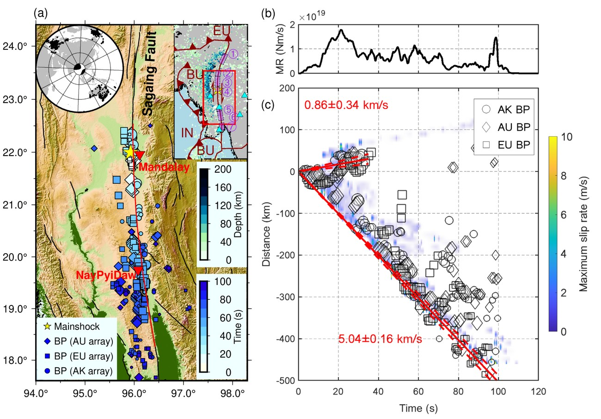
Seismic Array Source Imaging
We answer fundamental questions about the physics of earthquake ruptures — initiation, complex propagation, and final arrest — through high-resolution, robust observations. Numerical models predict rich rupture behavior, but observational constraints have long been limited by resolution. Dense seismic arrays let us trace high-frequency radiation by back-tracing the seismic waves they record, tracking the strongest zones of rupture radiation in space and time.
Case study — 2012 off-Sumatra M8.6. Back-projection revealed a remarkably complex rupture on four orthogonally oriented fault planes. The rupture branched onto faults under compressional stress — challenging conventional dynamic-clamping theory — and jumped a ~20 km offset between parallel segments, far larger than the ≤5 km steps typical of California faults.
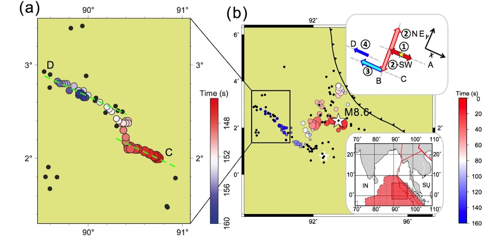
High-resolution MUSIC imaging
Standard back-projection uses beamforming, which has limited resolution when multiple sources radiate simultaneously. We introduced the MUltiple SIgnal Classification (MUSIC) algorithm into back-projection (Schmidt, 1986; Meng et al., GRL 2011) and made it practical for non-stationary seismic signals using multitaper cross-spectrum estimates (Thomson, 2000). MUSIC-enhanced back-projection yields sharper images of the rupture process (Meng et al., JGR 2012) and can separate sources with azimuth separation as small as 3°.
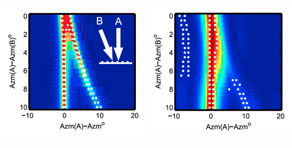
Reference-window strategy (the “swimming artifact”)
A well-known problem in back-projection is the “swimming artifact” — systematic transients that migrate across the image toward the receiver array, degrading confidence in source details. The artifact arises because earthquake waveforms are impulsive and non-stationary (amplitude and coherence decay quickly after the first arrival), whereas conventional back-projection assumes stationary signals. By replacing the conventional “absolute window” with a “reference window” in the sliding-window analysis, we mitigate the swimming artifact (Meng et al., EPS 2013) without sacrificing resolution.
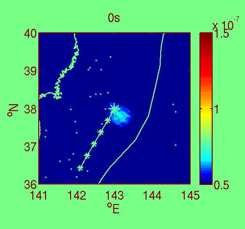
Slowness calibration
Different arrays can image the same earthquake differently, largely because of array-specific P-wave travel-time errors from 3-D Earth structure. We proposed slowness calibration (Meng et al., 2016) to reconcile them. Beyond aligning the first arrival to the cataloged hypocenter, we add a slowness (ray-parameter) correction — the spatial derivative of travel time with source location at each station — calibrated using aftershock catalogs. This markedly improves the consistency of back-projection across globally distributed arrays.
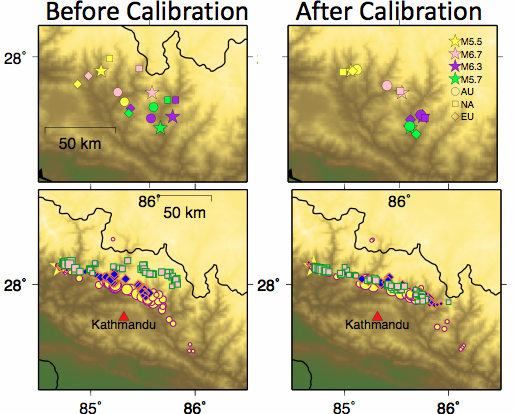
3-D back-projection for deep earthquakes
For deep-focus earthquakes, whose fault planes are poorly defined, we developed 3-D back-projection (3DBP). Because teleseismic rays are nearly vertical, standard back-projection has good horizontal but poor depth resolution. 3DBP combines P and pP phases, whose ray paths intersect in space, to recover depth. Applied to the 2013 Okhotsk earthquake (Mw 8.3) — the largest deep-focus event ever recorded — 3DBP shows a predominantly horizontal N–S rupture whose focal depth increases southward, consistent with cascading failure along sub-parallel horizontal planes in an en-echelon pattern.
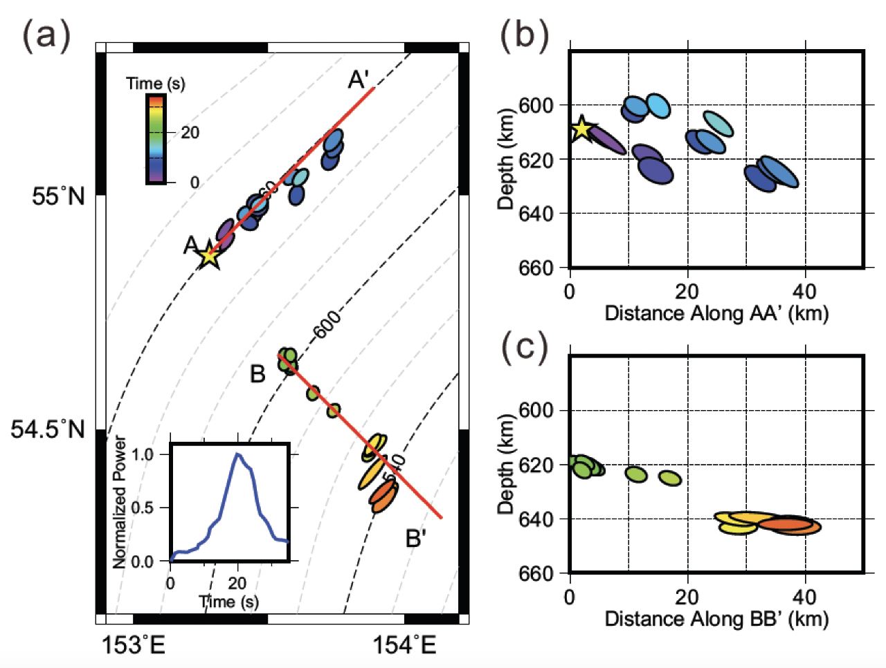
Physical insights from recent large earthquakes
Across many events, source imaging reveals rupture physics. In Tohoku-Oki, peak low-frequency slip lies up-dip of the hypocenter while high-frequency radiation comes from the deeper megathrust, consistent with small brittle asperities embedded in a ductile matrix. In Haiti, two high-frequency subevents at the ends of the geodetic slip mark stopping phases. In off-Sumatra, the rupture branched onto compressional faults, challenging dynamic-clamping ideas. In Okhotsk, olivine-to-spinel phase transformation and thermal-runaway shear instability appear to control different rupture segments. Additional studies (Iquique, Gorkha, Tajikistan, Illapel) show how ruptures interact with geometric barriers, narrow into confined zones, and split around asperities.
Earthquake Early Warning
We are developing earthquake early warning (EEW) based on small-scale seismic arrays that track rupture growth and the directivity (Doppler) effect in real time, providing finite-source estimates that overcome the limitations of conventional point-source EEW (Meng, Allen & Ampuero, BSSA 2014). Dense array clusters near active faults can estimate rupture size, duration, and directivity in real time by back-tracing the recorded waveforms — potentially enabling warning for M>7 events. We demonstrated the concept with the 2004 M6.0 Parkfield and 2010 M7.2 El Mayor-Cucapah earthquakes.
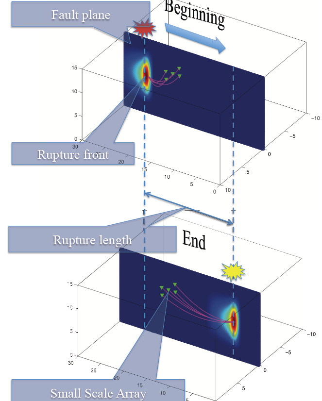
Tsunami Prediction & Early Warning
A natural extension of array-based EEW is to apply similar processing at larger spatial scale and longer time span for tsunami warning: use real-time back-projection to build a simple source model that feeds a tsunami simulation predicting arrival time and coastal run-up height. We demonstrated this for megathrust events including the 2011 Tohoku-Oki, 2014 Iquique, and 2015 Illapel earthquakes (An & Meng, GRL 2016), supporting warnings in regions exposed to near-field tsunami hazard.
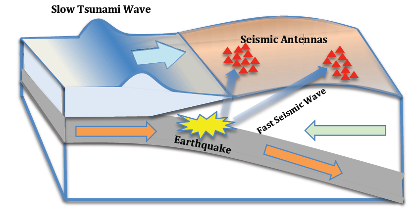
Time-reversal imaging of tsunami sources
Traditional tsunami source inversion uses finite-fault slip modeling, which is sensitive to assumed fault parameters and crustal rigidity and is computationally heavy. Time-reversal imaging instead reconstructs the initial sea-surface elevation by back-propagating and constructively interfering the recorded tsunami waveforms (An & Meng, 2017). It needs no pre-defined fault parameters, suits events with unknown fault geometry, handles dense meshes efficiently, and can resolve small secondary sources such as submarine landslides or splay-fault ruptures. We validated it on synthetic sources and applied it to the 2014 Iquique and 2015 Illapel events.
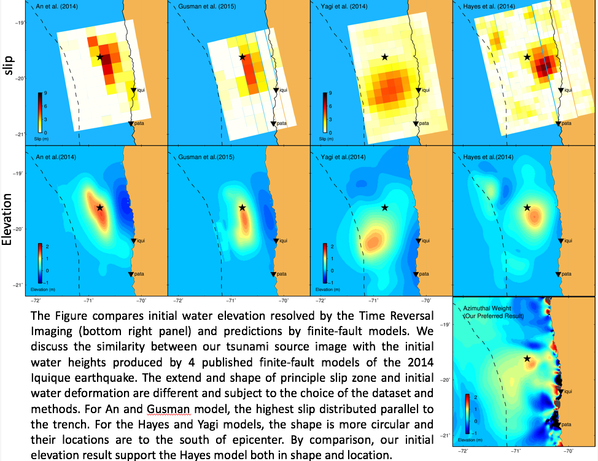
Earthquake Swarms & Fluid-Driven Seismicity
Not all seismicity is driven by tectonic loading alone. We study earthquake swarms and fluid-pressure-driven sequences, where migrating fluids and multiscale fault complexity modulate where and when earthquakes occur. Recent work examines the multi-year Noto Peninsula sequence in Japan — including what finally ended the swarm and drove its aftershocks (Mohanna et al., EPSL 2026) — and the hydrothermally driven swarms of the Tengchong Volcanic Field on the SE Tibetan Plateau (Ma et al., Tectonophysics 2026). Machine-learning detection (e.g., the EdgePhase multi-station phase picker) lets us build the dense catalogs these studies require.
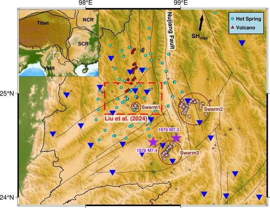
Pre-, Post-, and Independent Slow Slip
Many large earthquakes are preceded by foreshock sequences that are key to short-term forecasting. Using matched-filter detection and repeating-earthquake analysis, we study pre-seismic, post-seismic, and independent slow slip. Before the 2015 Gorkha earthquake we found a significant increase in seismicity rate a few days before the mainshock; before the 2015 Illapel earthquake, seismicity and aseismic slip progressively accelerated around the epicenter. After Illapel, we identified distinct early-aftershock expansion and afterslip consistent across methods. We also model episodic slow-slip events at the brittle–ductile transition as occurring within a viscoplastic shear zone, reproducing the observed linear-then-exponential slip evolution.
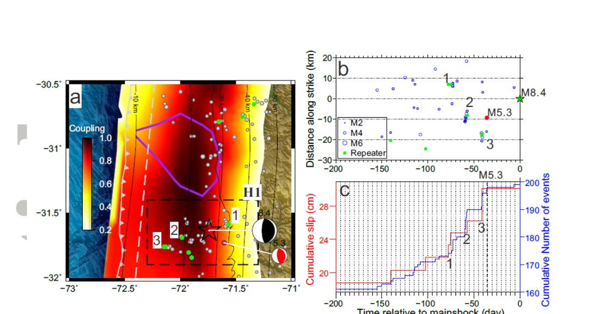